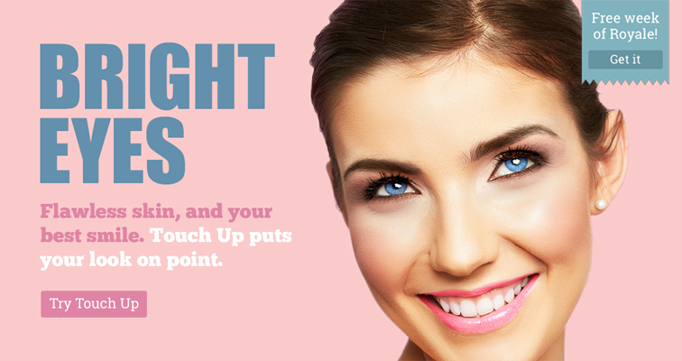

evan harold dot com
portfolio
){kind=link}
Anniversary – PicMonkey
By framing a re-engagement email as an anniversary celebration, I hoped to create a bond between the user and the brand. The user is either reminded of and encouraged to engage with their neglected account, or becomes more loyal to a brand they already love.
Newsletter, narrative – Doc Films
Here’s a relatively longform example of the eccentric newsletters that gave Doc Films its character. Reading like a dispatch from another world, these emails stood out from the rest of community calendar updates, and capitalized on the business model of Doc Films. Screening a different film every night meant that there were plenty of fleeting opportunities to see obscure films. Exaggerated mystery worked to hype the films, whereas attempts at explaining each film reduced their meanings and diluted their appeal.
Home page banners
){kind=link}
Promo – PicMonkey
“The best deal in the universe just got dealier” was PicMonkey’s first foray into promos, synthesizing the whimsy of the brand voice with the necessary urgency and persuasion of any promotional message.
){kind=link}
Rhymes - PicMonkey
Part of the PicMonkey brand is a playfully old-timey sense of whimsy, and this was a great opportunity to elevate that voice. To promote a collection of artisanal-looking graphics, I wanted the header image to look and read like a children’s book version (hence the rhymes) of 19th-century natural science journal.

){kind=link}
Touchup - PicMonkey
For this home page image, I researched Glamour and Cosmopolitan to recreate the rhythm and tone of fashion magazines. The copy lets each element stand out as a worthy feature without losing its overall flow.
){kind=link}
){kind=link}
){kind=link}
){kind=link}
Petra bag - Everlane (spec)
I like this bag a lot, so I wrote a tagline for fun. The turn of phrase captures and celebrates the bag’s beautiful simplicity and versatility.
Landing pages
PicMonkey card maker SEO page
This page was part of a larger landing page strategy to optimize the link structure within the PicMonkey domain, and to preserve the brand’s standing in search term rankings. In this case, I had to write around repeated instances of awkward SEO terms like “free card maker,” “online card maker,” and small variants thereof, without sounding empty. The result was a page that effectively supports those keywords (and the conversions that come from high rankings) while successfully introducing new users to a popular subset of features.
PicMonkey pricing page
This page has five primary objectives:
- Capture the full range of what PicMonkey does, without getting into minutia or losing product cohesion.
- Explain the difference between the two premium plans.
- Preserve the integrity of the free, ad-supported plan, but not so well that it looks like the best option.
- Convert to the annual plan.
- Promote the free trial and explain how it works. After testing multiple copy variations and researching dozens of freemium pricing pages, these objectives work together (despite their apparent contradictions) to form a clear, effective pricing page that increased conversion and retention rates.
Best Buy magazine ad - PicMonkey
A full-page ad that was part of a printed resource for first-time camera buyers.
Film blurbs - Doc Films
Selected blurbs that appeared on a quarterly calendar highlighting 80+ films. These were the primary arena for my copy to craft and showcase the Doc Films voice, since tens of thousands of these programs were printed and distributed across Chicago.
Quarterly program - Doc Films
An example of a quarterly program that I co-wrote, edited, and distributed. In partnership with the Art Director, I produced a video on how the experimental calendar design could be folded into a cylindrical paper lantern, in which the shades of blue signaled each month in the unbroken spiral of the Winter Quarter.
Radio, podcast, and streaming media
Podcast and streaming ads - PicMonkey
These ads were meant to stand out as much as possible from the usual fare of NPR ads, podcast promos, and streaming commercials. The goal was to disrupt the listening process (but, like, in a good way) with unexpected references and deliberately informal language. In the cases where the ads are host-read, I researched the show to make sure the script sounded as organic as possible for the given reader/format.
'))
'))
Social media - PicMonkey
I brainstormed and designed these images to promote specific PicMonkey features in a more off-beat, internet-friendly style than what was typical of the company. The popularity and legacy of this content pushed the brand into pop-camp territory that catered to the habits and attitudes of younger users.
UI & product copy
){kind=link}
Color names - PicMonkey
My dream job is to be color-naming consultant to the world’s cosmetic and art supply companies. Until then, I’ll take any opportunity to name colors. I was given complete creative liberty to name branded colors in a mobile PicMonkey product, and the resulting names are impressionistic, evocative, and playfully abstract.
){kind=link}
){kind=link}
Microcopy - PicMonkey
I like to sprinkle subtle flavor where appropriate, and these are great examples of how a little goes a long way. These strings are more human approaches to the dry, technical settings and error strings that users brush over all the time. They give the product a consistent character, and remind users that the voice isn’t (just) a promotional tool. The voice is where the product meets the user. That intersection should be a positive experience.
Social media